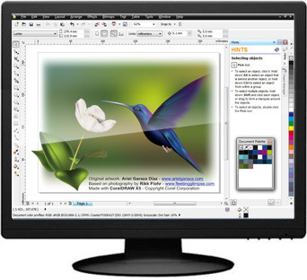

CorelDRAW — векторный графический редактор, разработанный канадской корпорацией Corel.
Кривые Безье — позволяют создавать прямые, ломаные и гладкие кривые, проходящие через узловые точки, с определёнными касательными в этих точках;
Заливка — позволяет закрашивать ограниченные области определённым цветом или градиентом;
Текст создаётся с помощью соответствующего инструмента, а потом часто преобразуется в кривые, чтобы обеспечить независимость изображения от шрифтов, имеющихся (или отсутствующих) на компьютере, используемом для просмотра;
Набор геометрических примитивов;
Карандаш — позволяет создавать линии «от руки». При создании таких линий возникает большое количество узловых точек, от которых в дальнейшем можно избавиться с помощью «упрощения кривой».
Векторные редакторы часто противопоставляют растровым редакторам. В действительности, их возможности часто дополняют друг друга:
Векторные редакторы обычно более пригодны для создания разметки страниц, типографики, логотипов, sharp-edged artistic иллюстраций (например, мультипликация, clip art, сложные геометрические шаблоны), технических иллюстраций, создания диаграмм и составления блок-схем.
Растровые редакторы больше подходят для обработки и ретуширования фотографий, создания фотореалистичных иллюстраций, коллажей, и создания рисунков от руки с помощью графического планшета.
Последние версии растровых редакторов, как GIMP или Photoshop, предоставляют пользователю и векторные инструменты (например, изменяемые кривые), а векторные редакторы (CorelDRAW, Adobe Illustrator, Xara Xtreme, Adobe Fireworks, Inkscape, SKI и другие) реализуют и растровые эффекты (например, заливку), хотя иногда и несколько ограниченные по сравнению с растровыми редакторами.